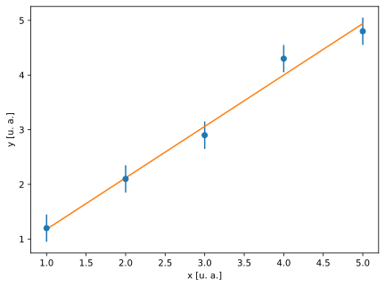

Abbiamo incontrato i nostri primi esempi di funzioni (plt.figure, plt.errorbar e plt.show) nel capitolo Capitolo 2. In quel contesto ce la siamo cavata senza entrare troppo nei dettagli, ma adesso è arrivato il momento di tornare sull’argomento ed affrontarlo di petto.
Supponiamo di voler scrivere un libro di cucina dedicato ai dolci, e di avere 8 ricette che fanno uso della crema pasticcera. Siamo di fronte ad un’importante scelta editoriale: possiamo scrivere la ricetta della crema una volta sola (magari all’inizio) e poi rimandare alla pagina opportuna ogni volta che serve; oppure copiare la ricetta della crema verbatim per 8 volte. Quali sono i pro e i contro delle due possibilità?
Se scegliamo di scrivere la ricetta una volta sola abbiamo due vantaggi distinti:
il libro ha fisicamente più breve, il che è bene per l’ambiente (meno per noi, se veniamo pagate in base al numero di pagine);
se per la seconda edizione ci viene in mente un tocco magico per migliorare la ricetta non dobbiamo modificare il libro in 8 posti diversi, ma in uno solo.
Ci sono controindicazioni? Beh, forse il leggero fastidio di non avere tutto il flusso di informazioni in un posto solo e di dover andare avanti e dietro nel libro. Pensateci un attimo: non c’è dubbio che, in questo caso, i pro superino i contro.
Una cosa analoga avviene sistematicamente nei programmi. Una funzione, come abbiamo già detto sommariamente, è un blocco di istruzioni coerente progettato per svolgere un compito specifico. Ogni volta che il nostro programma ha bisogno di svolgere questo compito, anziché copiare fisicamente le istruzioni da una parte all’altra, chiamiamo la funzione. Si tratta di un principio talmente importante che gli informatici gli hanno dato anche un nome: DRY (Do not Repeat Yourself).
4.1 La nostra prima funzione
Non c’è modo migliore per imparare a fare una funzione che scriverne una. E non c’è modo migliore che scriverne una che farlo per risolvere un problema concreto. La nostra prima funzione, allora, la faremo per fittare una serie di dati con una retta.
Nota
Lo studierete in tutto il dettaglio nella parte di statistica del corso di Laboratorio, ma fare un fit ad una serie di dati significa trovare la funzione che più si adatta ai dati, all’interno di una famiglia di funzioni dipendente da uno o più parametri (il modello). Più precisamente: si tratta di trovare i valori dei parametri del modello (e le incertezze associate) per cui l’accordo con i dati è, in un qualche senso da precisare, massimo. Nel caso del fit con una retta cercheremo il coefficiente angolare e l’intercetta della retta nel piano che meglio descrive la nostra serie di punti.
import numpy as npfrom matplotlib import pyplot as pltfrom scipy.optimize import curve_fit# Define the input data.x = np.array([1., 2., 3., 4., 5.])y = np.array([1.2, 2.1, 2.9, 4.3, 4.8])dy = np.full(y.shape, 0.25)# Define the fitting model.def line(x, m, q):return m * x + q# Create a figure and make a plot with error bars.plt.figure("linear fit")plt.errorbar(x, y, dy, fmt="o")plt.xlabel("x [u. a.]")plt.ylabel("y [u. a.]")# Fit the data points.popt, pcov = curve_fit(line, x, y, sigma=dy)m_hat, q_hat = poptsigma_m, sigma_q = np.sqrt(pcov.diagonal())print(f"m = {m_hat:.3f} ± {sigma_m:.3f}")print(f"q = {q_hat:.2f} ± {sigma_q:.2f}")plt.plot(x, line(x, m_hat, q_hat))# Show the plot on the screen.plt.show()
m = 0.940 ± 0.067
q = 0.24 ± 0.22

Avrete notato che, rispetto al nostro programma iniziale abbiamo applicato molte delle cose che abbiamo imparato nel Capitolo 3. Ma la cosa veramente nuova è la funzione che descrive il nostro modello di fit—una retta.
def line(x, m, q):return m * x + q
Vediamo i punti salienti:
una nuova funzione si definisce con la parola chiave def, seguita dal nome che vogliamo dare alla funzione (nel nostro caso line);
seguono tutti gli argomenti della funzione, racchiusi tra parentesi tonde;
i due punti : delimitano l’inizio del corpo della funzione, che generalmente è a capo, ed è indentato di 4 spazi verso destra;
se la funzione restituisce un valore, che è un caso tipico, questo si fa utilizzando la parola chiave return.
Nel nostro caso particolare gli argomenti della funzione sono, in ordine:
il valore x della variabile indipendente, che può essere un numero o un array di numpy;
il valore m del coefficiente angolare della retta;
il valore q dell’intercetta.
La funzione, come si vede, restituisce il valore che la retta assume sull’asse delle ordinate per un particolare insieme di valori delle ascisse, fissati coefficiente angolare ed intercetta.
import numpy as npdef line(x, m, q):return m * x + qx = np.linspace(0., 10., 11)m =2.q =1.print(line(x, m , q))
[ 1. 3. 5. 7. 9. 11. 13. 15. 17. 19. 21.]
4.1.1 Funzioni di Python e funzioni matematiche
La nostra prima funzione in Python, per una pura coincidenza, implementa una funzione matematica in senso stretto. Basta scrivere \[
f(x; m, q) = mx + q
\] per rendersi conto che l’analogia tra le due cose, qui, è pressoché perfetta.
In effetti, se ci pensiamo bene, non è poi così strano che questo nuovo oggetto che stiamo gradualmente introducendo si chiami così. Come una funzione matematica, una funzione di Python può accettare argomenti; e come una funzione matematica, una funzione di Python può restituire un (o più di un) valore. Eppure le due cose sono fondamentalmente diverse.
Una funzione matematica, strettamente parlando, calcola un valore. Una funzione in un qualsiasi linguaggio di programmazione fa una cosa più generale, ovvero esegue un compito specifico. A volte questo compito è calcolare un valore, a volte no: una funzione potrebbe, ad esempio, scrivere dei dati in un file su disco; aprire una finestra grafica sullo schermo; configurare un router—non c’è limite alla fantasia.
Non è nemmeno detto che una funzione in questo nuovo senso debba per forza restituire un valore—ci sono funzioni legittime che non restituiscono niente!
Questo non è del tutto corretto, almeno in Python: una funzione restituisce sempre qualcosa, e se non mettiamo un’istruzione return nel corpo della funzione, questo qualcosa è None.
Notiamo, per inciso, che come mostrano questi ultimi due esempi, non siete costrette ad intercettare il valore restituito dalla funzione—potete tranquillamente chiamarla senza assegnare il risultato ad una variabile.
Si possono persino fare funzioni che, oltre a non restituire valori, non accettano argomenti. E, se ci pensate per un secondo, ne abbiamo già incontrata almeno una
plt.show()
Ok, abbiamo già speso troppo tempo sulla questione ed è il momento di procedere, ma avete capito il messaggio: in questo contesto una funzione è banalmente una funzione matematica, ma una sorta di sua generalizzazione.
4.1.2 Digressione: la funzione curve_fit
Prima di andare avanti vale la pena fermarsi per un attimo a discutere il nostro ultimo incontro
popt, pcov = curve_fit(line, x, y, sigma=dy)
Si tratta ovviamente di una funzione, e non bisogna andare molto lontano nel nostro programma
from scipy.optimize import curve_fit
per capire che si tratta di una funzione contenuta nel modulo optimize della libreria scipy. (Link alla documentazione.)
Che cosa possiamo dire di questa funzione: beh, anche senza guardare la definizione completa, possiamo dire che accetta almeno \(4\) argomenti;
il modello, che è anch’esso una funzione (pensateci un attimo: una funzione che accetta come argomento un’altra funzione—chi l’avrebbe immaginato?);
le coordinate \(x\) dei punti da fittare;
le coordinate \(y\) dei punti da fittare;
le incertezze sulla \(y\).
Possiamo anche dire con certezza che la funzione curve_fit restituisce due oggetti, che noi abbiamo assegnato alle variabili popt e pcov. Cosa sono questi due oggetti?
popt è un array di numpy che contiene i valori ottimali del parametri di fit, in questo caso \(\hat{m}\) e \(\hat{q}\);
pcov è un array a due indici (o, se volete, una matrice, in questo caso \(2 \times 2\)) che va generalmente sotto il nome di matrice di covarianza dei parametri.
A questo livello non dovete sapere niente della matrice di covarianza, se no che le incertezze sui parametri coincidono con la radice quadrata dei suoi elementi diagonali. Esaminate allora con attenzione le righe
ed assicuratevi di aver capito cosa significano, magari facendovi stampare sul terminale i valori intermedi.
4.2 Le funzioni più in dettaglio
Se avete prestato attenzione, c’è almeno una cosa che non abbiamo ancora spiegato e che potrebbe infastidire le più pignole tra voi. Come mai chiamiamo alcuni argomenti per nome e altri no? Lo abbiamo visto almeno due volte.
plt.errorbar(x, y, dy, fmt="o")popt, pcov = curve_fit(line, x, y, sigma=dy)
Cosa c’è di particolare negli argomenti fmt (di plt.errorbar) e sigma (di curve_fit) che fa sì che dobbiamo chiamarli con questa strana sintassi nome_argomento=valore, mentre in tutti gli altri casi utilizziamo semplicemente il nome della variabile rilevante?
Per capire questo dobbiamo guardare più in dettaglio le regole per la definizione di funzioni in Python.
4.2.1 Definizione di una funzione: segnatura
Tecnicamente l’informazione che specifica come si chiama una particolare funzione si chiama segnatura, e comprende il nome della funzione stessa, il nome di tutti gli argomenti che la funzione accetta, e l’ordine in cui questi debbono essere forniti. Così la nostra funzione
def greet(name):print(f"Hello {name}!")
ha una segnatura semplicissima: si chiama greet, ed accetta un solo parametro, che si chiama name. Il modo più semplice per chiamare una funzione è fornire i valori di tutti gli argomenti, nell’ordine in cui sono definiti nella segnatura, ma Python permette anche di fare una cosa diversa: chiamare gli argomenti per nome. Così, tornando alla nostra semplice funzione di esempio, abbiamo due possibilità distinte, ma equivalenti:
In questo caso non ha molto senso usare la seconda forma, che è più verbosa. Anche se, ad un’occhiata più approfondita, specificare il nome dell’argomento nella chiamata ci dà informazione di contesto utile: la stringa "Giulia", che passiamo alla funzione, rappresenta il nome della persona che vogliamo salutare. Potete immaginare che nei casi più complessi, in cui magari abbiamo una dozzina di argomenti, chiamare le cose per nome aiuti a non dover ricordare a memoria il loro ordine nella segnatura. Ma ci arriveremo per gradi.
Quando definiamo una funzione in Python, possiamo assegnare ad ogni singolo argomento un valore di default nella forma nome_argomento=valore_di_default direttamente nella definizione della funzione. Quando un argomento ha un valore di default, possiamo omettere di specificarlo nelle chiamate alle funzioni stesse.
Implicitamente, la possibilità di definire argomenti di default fa sì che tutti gli argomenti che ne sono sprovvisti siano non opzionali, o obbligatori: semplicemente è impossibile chiamare la funzione senza fornirne i valori.
Avviso
Quando usiamo uno o più valori di default nella definizione di una funzione, dobbiamo ricordare una regola importante: se uno specifico argomento ha assegnato un valore di default, allora anche tutti quelli che seguono devono avere un valore di default. Il motivo di questo vincolo apparentemente restrittivo è di evitare potenziali ambiguità nella chiamata, ma a questo livello lo prenderemo come una condizione al contorno.
Bene, abbiamo collezionato abbastanza informazioni e siamo pronti per discutere in modo più approfondito la segnatura di una funzione più complessa—ne prenderemo una tra quelle che abbiamo già incontrato.
Nota
La questione della definizione delle funzioni in Python è significativamente più complessa e sfaccettata. Se siete interessate ad un’introduzione sommaria ma tutto sommato completa all’argomento, il posto giusto in cui guardare è la pagina della documentazione di Python relativa alla definizione delle funzioni.
4.2.2 Un esempio dal mondo reale
Torniamo per un attimo alla funzione errorbar del modulo pyplot di matplotlib che abbiamo già utilizzato in più di un’occasione. La segnatura si leggere direttamente dalla documentazione:
Non lasciatevi confondere dalle annotazioni in verde che non sono esposte nella pagina delle documentazione. Sono un argomento avanzato che non copriremo, ma non hanno nessuna influenza sull’esecuzione del programma. (Ma se la cosa vi aiuta, sfruttatela pure per ragionare sulle funzioni!)
Quando confrontate la documentazione online con l’output dell’help interattivo del vostro interprete di Python, verificate sempre che le versioni dei pacchetti siano indentiche, perché la segnatura di una funziona può cambiare da una versione all’altra!
Andiamo per ordine. La funzione ha la bellezza di 18 parametri! Pensate per un attimo se Python non offrisse la possibilità di fornire valori di default agli argomenti, e ogni volta che vogliamo fare un grafico di dispersione dovessimo passare letteralmente 18 cose diverse…
I primi due argomenti (x e y) non hanno valori di default, per cui sono da considerare obbligatori: ha senso, perché se voglio fare un grafico di dispersione, come minimo devo passare le coordinate \(x\) e \(y\) dei punti. Gli altri 16 parametri hanno valori di default, per cui sono opzionali. (Ricordate la regola fondamentale nella definizione di una funzione: quanto un argomento ha un valore di default, anche tutti quelli che lo seguono devono avere un valore di default.)
Guardiamo con attenzione i primi 4 argomenti:
matplotlib.pyplot.errorbar(x, y, yerr=None, xerr=None, ...)
La funzione è definita in modo che dobbiamo passare in ordine:
i valori x della variabile indipendente;
i valori y della variabile dipendente;
le incertezze yerr su y (nota bene: non su x!);
le incertezze xerr su x.
Vedete qualcosa di strano? Se passiamo x prima di y, non avrebbe senso passare xerr prima di yerr? Da un punto di vista di mera simmetria può darsi, ma da un punto di vista pratico la segnatura della funzione è assolutamnete ragionevole, perché mentre è comune avere un grafico di dispersione con incertezze sulla \(y\) ma non sulla \(x\), il contrario non avviene praticamente mai! Allora il modo in cui gli sviluppatori hanno definito la funzione permette di coprire tutti i casi d’uso più frequenti senza mai chiamare gli argomenti per nome:
errorbar(x, y) # Scatter plot senza incertezzeerrorbar(x, y, dy) # Incertezze sulla y ma non sulla xerrorbar(x, y, dy, dx) # Incertezze sia sulla x che sulla y
Certo: se fossimo proprio adamantine nel voler fare uno scatter plot con incertezze sulla \(x\) ma non sulla \(y\), la sintassi sarebbe leggermente più involuta, perché siamo limitati alle due possibilità
errorbar(x, y, None, dx)errorbar(x, y, xerr=dx)
ma la cosa è irrilevante perché questo, vi assicuro, non succede quasi mai.
E adesso abbiamo tutti gli ingredienti per capire il motivo per cui abbiamo inizialmente chiamato la funzione in quel modo apparentemente bizzarro
errorbar(x, y, dy, fmt="o")
La logica è più o meno la seguente: vogliamo passare esplicitamente quattro argomenti (x, y, yerr e fmt) alla funzione, e nella segnatura questi argomenti sono il primo, il secondo, il terzo ed il quinto. Non possiamo passarli semplicemente per valore, così come sono, perché altrimenti "o" sarebbe assegnato a dx, non a fmt. Ci restano due possibilità: passare il valore di defaul per il quarto argomento (xerr), oppure fare quello che abbiamo fatto.
errorbar(x, y, dy, None, "o")errorbar(x, y, dy, fmt="o")
Le due cose sono esattamente equivalenti, ma la seconda è sicuramente più espressiva.
Ci fermiamo qui. Non abbiamo spiegato cosa vuol dire il simbolo * dopo il quinto argomento, né il **kwargs alla fine della definizione della funzioni, ma per adesso sappiamo abbastanza.